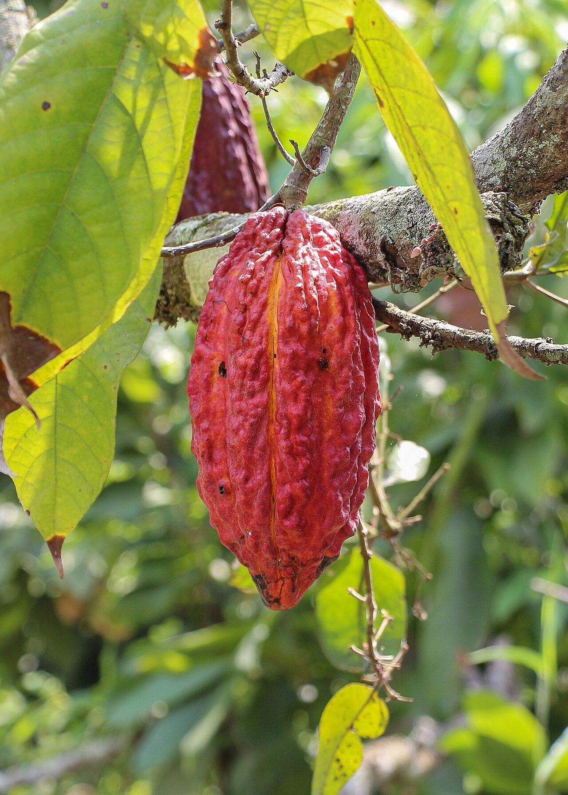

本周议题 01 · 商业 / 农产品
巧克力为什么会突然变贵：可可的瓶颈不只在天气
可可树集中在少数产区、进入盛产需要时间，农户收入又影响更新和防病投入；价格上涨并不会立刻长出更多豆子。

先看供应链
可可主要由热带小农种植。果荚采下后，豆子要发酵、干燥，再经贸易商、加工厂制成可可液块、可可脂和可可粉。病害、降雨异常和老龄树会影响收成，但港口、融资、库存和加工能力也会放大波动。
顺手多懂一点
农产品供给有一条“生物钟”
价格上涨时，工厂可以加班，农户却不能让新树立刻结果。扩种要先取得土地和苗木，还要等待多年；如果农户此前收入低、缺少更新树木和防治病害的资金，高价出现时，系统反而可能正处在最脆弱的阶段。
真正值得聊的地方
消费者付得更多，不等于种植者得到得更多
零售价格还包含糖、乳制品、加工、包装、运输与品牌利润；期货价格上涨后，农户实际收到多少，取决于当地收购制度、汇率、合同和税费。第一步是供应收紧推高国际价格，第二步是企业重新定价或缩小规格，第三步才可能通过采购传到农户。
提高农户收入有助于更新果园和改善劳工条件，但如果只用高价刺激扩种，也可能推动毁林；认证能增加可追溯性，却会带来合规成本。可持续可可的难点，是把短期高价变成长期生产能力，而不是下一轮过度扩张。
可可涨价的核心矛盾，是市场价格按天变，树木、土壤与农户投资却按年变化。